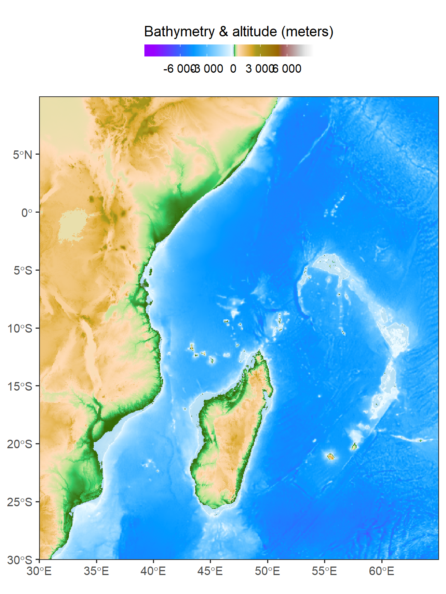

10 Raster Manipulation
In this chapter, our main objectives revolve around efficient data manipulation and analysis of raster data. We aim to equip ourselves with the necessary skills to achieve these goals through the utilization of two key R packages: terra section 10.2 and tidyterra section 10.3.
10.1 glimpse of raster
in Chapter 9, we were intoduced with raster dataset. In this chapter we expand that introduction much deeper. To begin, a raster is a fundamental spatial data structure used to represent and store geographic information. It divides a region into a grid of rectangular cells, also known as pixels. Each cell within the raster can hold one or more values, allowing for the storage of various types of information, such as elevation, temperature, land cover, or satellite imagery.
This grid-like structure of a raster distinguishes it from vector data, which represents geographic features using points, lines, and polygons. While vector data focuses on discrete spatial entities, rasters provide a continuous representation of data across the entire extent of the region.
The raster data structure is commonly employed in various fields, including remote sensing, environmental modeling, terrain analysis, and geographic information systems (GIS). It offers a flexible and efficient means of storing and analyzing spatial data, facilitating tasks such as spatial interpolation, overlay analysis, and spatial statistics.
10.2 terra package
The terra package is a powerful tool in R that offers a comprehensive suite of functions for handling raster data. It provides a wide range of capabilities, including creating, reading, manipulating, and writing raster data. These functions allow users to efficiently work with raster datasets and perform various operations on them.
One of the notable strengths of the terra package is its collection of general raster data manipulation functions. These functions serve as building blocks and can be combined to develop more specialized functions tailored to specific analysis tasks. For instance, users can leverage functions to read a subset of raster values from a file or convert cell numbers to coordinates and vice versa, enabling them to extract relevant information and perform coordinate-based operations.
Additionally, the terra package implements raster algebra, enabling users to perform mathematical operations on raster data. This capability is particularly useful when working with multiple overlapping rasters or when applying mathematical transformations to derive new raster layers.
By encompassing such a comprehensive set of functions for raster data manipulation, the terra package empowers users to efficiently work with raster datasets, perform complex operations, and integrate spatial analysis seamlessly into their R workflow.
10.2.1 Data structure in terra
The terra package is built upon several key classes, with SpatRaster and SpatVector being the most significant ones. These classes serve as the foundation for representing and manipulating spatial raster and vector data, respectively.
10.2.2 spatRaster
A SpatRaster is a data structure used to represent multi-layer raster data. It contains essential parameters that describe the raster, including the number of columns and rows, the spatial extent (bounding box) that defines its coverage, and the coordinate reference system (map projection) used to define its spatial coordinates.
Apart from these fundamental parameters, a SpatRaster object can also store information about the file(s) associated with the raster cell values. This allows for the possibility of storing the cell values either in memory or in external files. By supporting both options, SpatRaster provides flexibility in handling raster data, enabling efficient memory management for large datasets.
When the raster cell values are stored in files, the SpatRaster object can hold metadata related to the file(s), such as file paths, data formats, compression methods, and other properties. This information facilitates efficient access and manipulation of raster data from external sources.
In summary, a SpatRaster represents multi-layer raster data and contains essential parameters to describe its dimensions, spatial extent, and coordinate reference system. It also allows for the storage of raster cell values either in memory or in external files, enabling efficient handling of raster data and supporting various data management scenarios.
These classes, SpatRaster and SpatVector, are fundamental to the terra package and serve as the primary means of representing and manipulating spatial raster and vector data, respectively. They provide a consistent and efficient framework for handling diverse spatial analysis tasks within the R environment.
10.2.3 spatVector
A SpatVector in the terra package represents vector data, which encompasses geometries such as points, lines, or polygons, along with their associated tabular attributes.
The SpatVector class provides a versatile structure for storing and analyzing vector data within the terra package. It can handle different types of geometries, allowing you to work with point data (e.g., locations of sampling sites), line data (e.g., roads, rivers), or polygon data (e.g., land parcels, administrative boundaries).
In addition to geometric information, SpatVector objects also store attribute data associated with the vector features. This tabular information could include attributes such as names, population counts, categories, or any other relevant information pertaining to the features.
By combining both geometric and attribute data, SpatVector objects enable you to perform various operations and analyses on vector data. You can perform spatial queries, spatial joins, attribute filtering, and calculations based on the geometries and their attributes.
10.2.4 Creating spatRaster
To generate a SpatRaster from scratch using the rast() function in the terra package is a simple task. The default settings create a global raster data structure with a longitude/latitude coordinate reference system (CRS) and 1 by 1 degree cells. However, you have the option to modify these settings by providing additional arguments to the function or changing the parameters after creating the object. First, make sure the terra package is installed and loaded in your R environment:
To create a SpatRaster from scratch with custom settings, you can specify arguments such as xmin, nrow, ncol, and crs when calling the rast() function. For example:
This example creates a SpatRaster object covering the entire globe with a resolution of 1 by 1 degree and a WGS84 (longitude/latitude) CRS.
class : SpatRaster
dimensions : 180, 360, 1 (nrow, ncol, nlyr)
resolution : 1, 1 (x, y)
extent : -180, 180, -90, 90 (xmin, xmax, ymin, ymax)
coord. ref. : +proj=longlat +datum=WGS84 +no_defs To transform a SpatRaster object to a different CRS (projection), you can use the crs() function. It allows you to reproject the SpatRaster to a new CRS while preserving the underlying cell values. For example:
class : SpatRaster
dimensions : 180, 360, 1 (nrow, ncol, nlyr)
resolution : 1, 1 (x, y)
extent : -180, 180, -90, 90 (xmin, xmax, ymin, ymax)
coord. ref. : +proj=utm +zone=37 +datum=WGS84 +units=m +no_defs This will transform the SpatRaster object r to a new CRS specified by the Universal Transverse Mercator (UTM) projection with zone 37.
In the example provided above, the my.rast object represents a skeleton or framework of a SpatRaster. It contains information about the number of rows and columns, as well as the geographic location of the raster. However, at this stage, there are no actual cell values associated with the my.rast object.
let’s first use ncell function to compute total number of cells in the my.rast raster.
Then generate the random values of sea surface temprature equivalent to the number of cell in the my.rast spatRaster object
Then fill the sst values we just generated into the cells of the spatRaster object as highlighed in the code;
In a nutshell, the The code my.rast.sst = my.rast; my.rast.sst[] = my.values; my.rast.sst creates a new SpatRaster object named my.rast.sst by assigning the my.rast object to it. Then, it assigns the values stored in the my.values variable to the cell values of the my.rast.sst object using the empty square brackets ([]) notation.
class : SpatRaster
dimensions : 180, 360, 1 (nrow, ncol, nlyr)
resolution : 1, 1 (x, y)
extent : -180, 180, -90, 90 (xmin, xmax, ymin, ymax)
coord. ref. : +proj=longlat +datum=WGS84 +no_defs
source(s) : memory
name : lyr.1
min value : 17.89994
max value : 32.50958 Finally, the code retrieves and returns the my.rast.sst object. This sequence of operations ensures that the my.rast.sst object has the same spatial properties as my.rast, but with the cell values replaced by the values in my.values.
10.2.5 Reading spaRaster file
While creating a SpatRaster object from scratch using the rast() function is useful, in many cases, you will need to import raster data from your working directory or external sources. To accomplish this, you can utilize the rast() function with appropriate arguments to read and import raster data. The function allows you to specify the file path or name of the raster file you want to import.
By providing the necessary information, such as the file format, location, and other relevant details, the rast() function will load the raster data into a SpatRaster object. This enables you to access and manipulate the imported raster data within your R environment for further analysis, visualization, or any other required tasks. Importing raster objects using the rast() function provides a convenient way to incorporate existing raster data into your workflow.
class : SpatRaster
dimensions : 3181, 2641, 1 (nrow, ncol, nlyr)
resolution : 0.01666667, 0.01666667 (x, y)
extent : 25.99167, 70.00834, -40.00833, 13.00834 (xmin, xmax, ymin, ymax)
coord. ref. : lon/lat WGS 84
source : wioregio-7753.asc
name : wioregio-7753 10.2.6 Visualize raster
To visualize a raster with terra, you can use theplot() function, which creates a map of the values of a SpatRaster or SpatVector object.
10.2.7 stacked SpatRaster
One important issue in terra is the ability to stack multiple rasters into a single seamless raster object. This is useful when working with multiple rasters that have the same spatial extent, resolution, and coordinate reference system (CRS). We will come to learn how to stack raster objects in terra using the stack() function or c. In this section, I will compute indices using a terrain() to illustrate the concept of stacked spatRaster.
Lets, compute these indeces, which derive eight indices stacked into a single raster object.
Code
class : SpatRaster
dimensions : 2400, 2100, 9 (nrow, ncol, nlyr)
resolution : 0.01666667, 0.01666667 (x, y)
extent : 29.99167, 64.99167, -30.00833, 9.991677 (xmin, xmax, ymin, ymax)
coord. ref. : lon/lat WGS 84
source(s) : memory
names : wiore~-7753, slope, aspect, TPI, TRI, TRIriley, ...
min values : -6756, 0.00000, 0, -1200.00, 0, 0.000, ...
max values : -1, 34.89659, 360, 932.25, 1200, 3773.468, ... 10.3 tidyterra package
In Section 10.2, we learn how to create a raster from scratch and also how to read raster files stored in either our working directories or from online with terra package. In this section we expand our understanding of manipulating raster data with a tidyterra package.
The tidyterra package adds common methods from the tidyverse for SpatRaster and SpatVector objects created with the terra package. It enhances the data manipulation and analysis capabilities of SpatRaster and SpatVector objects, allowing for a seamless integration of spatial data into the tidyverse workflow.
With tidyterra, you can leverage the power of popular tidyverse packages like dplyr, tidyr, and ggplot2 for working with SpatRaster and SpatVector objects. It provides a set of methods and functions that align with the tidyverse philosophy, allowing for consistent and intuitive data manipulation.
Furthermore, tidyterra includes specialized functions such as as_tibble() to convert SpatRaster and SpatVector objects into tidy tibbles, enabling smooth integration with other tidyverse functions and pipelines. This integration makes it easier to perform data wrangling, aggregation, and analysis on spatial datasets.
You can use dplyr functions like, rename(), filter(), mutate(), and select() to filter, transform, and select specific subsets of your spatial data. The gather() and spread() functions from tidyr can be employed for reshaping your data into a tidy format.
10.3.1 rename
One of the functions available in tidyterra is the rename() function, which is a wrapper around the rename()function in the *dplyr* package.rename()function in tidyterra allows to easily modify layer names in a in spatRaster object. By usingrename()`, we can provide new names for specific layer, which can be helpful for improving the clarity, consistency, and readability of the raster data.
Moreover, when working with raster data from different sources or combine more than one raster object to create a stack spatRaster object, the rename() function enables us to harmonize raster layer names. By aligning the names of corresponding layer across rasterstack, we can ensure consistency and compatibility, making it easier to combine, compare, and analyze the data.
class : SpatRaster
dimensions : 2400, 2100, 1 (nrow, ncol, nlyr)
resolution : 0.01666667, 0.01666667 (x, y)
extent : 29.99167, 64.99167, -30.00833, 9.991677 (xmin, xmax, ymin, ymax)
coord. ref. : lon/lat WGS 84
source(s) : memory
name : depth
min value : -6756
max value : 5677 10.3.2 filter
The filter() function in the tidyterra package is a powerful tool for raster data manipulation and subsetting. It allows us to extract specific values from a raster object on certain conditions or criteria. Using filter(), we can define logical expressions that evaluate values in raster object. Values that meet the specified criteria are retained, while those that do not meet the conditions are removed from the resulting subset.
The filter() function is flexible and supports a wide range of conditions, including comparisons (==, !=, <, >, <=, >=), logical operators (&, |), and other functions like is.na() or startsWith(). This versatility enables us to filter data based on various criteria, such as specific values, ranges, patterns, or combinations of multiple conditions.
class : SpatRaster
dimensions : 2400, 2100, 1 (nrow, ncol, nlyr)
resolution : 0.01666667, 0.01666667 (x, y)
extent : 29.99167, 64.99167, -30.00833, 9.991677 (xmin, xmax, ymin, ymax)
coord. ref. : lon/lat WGS 84
source(s) : memory
name : depth
min value : -6756
max value : 0 10.3.3 mutate
The mutate() function in the tidyterra package is a powerful tool for creating new raster object or modifying existing values within a raster. It allows us to add calculated raster or transform existing raster based on specific operations or functions.
Using mutate(), we can define new raster by specifying a name for the new raster and providing an expression that calculates its values. This expression can involve mathematical operations, logical operations, or functions that operate on individual values or entire raster.
mutate() facilitates the creation of derived raster. It allows us to perform calculations, transformations, or modifications on the raster, enabling us to derive new insights or prepare the raster for further analysis.
The mutate() function operates on the principle of non-destructive modification, meaning that it creates a new layer of raster object with the modified values while preserving the original raster. This allows us to create a stacked raster and supports a more organized raster manipulation workflow.
class : SpatRaster
dimensions : 2400, 2100, 2 (nrow, ncol, nlyr)
resolution : 0.01666667, 0.01666667 (x, y)
extent : 29.99167, 64.99167, -30.00833, 9.991677 (xmin, xmax, ymin, ymax)
coord. ref. : lon/lat WGS 84
source(s) : memory
names : depth, bathy_m
min values : -6756, 0
max values : 0, 6756 10.3.4 transmute
Unlike mutate function, which add a raster in the existing spatraster object, a transmutate create a new raster object that is not stacked in the oriign fiel instead. Let’s say artisanal fisheries operates in shallow areas below 200 and we ought to dermacate this area.
Code
class : SpatRaster
dimensions : 2400, 2100, 1 (nrow, ncol, nlyr)
resolution : 0.01666667, 0.01666667 (x, y)
extent : 29.99167, 64.99167, -30.00833, 9.991677 (xmin, xmax, ymin, ymax)
coord. ref. : lon/lat WGS 84
source(s) : memory
categories : label
name : bath.class
min value : Deep
max value : Shallow 10.3.5 select
The select() function in tidyterra allow us to choose and rearrange layer(s) from stacked spatRaster object. It provides a flexible way to subset and reorder raster, making it easier to work with specific subsets of data or to reorganize the structure of the raster.
Using select(), we can specify which raster layer to include or exclude from the spatraster object based on their names or other conditions. select() also provides the ability to rename raster layer while selecting them, enabling us to give more meaningful or concise names to raster.
The select() function can be used in conjunction with other tidyterra functions, such as mutate(), filter(), and arrange(), to perform data manipulation tasks on SpatRaster and SpatVector objects
class : SpatRaster
dimensions : 2400, 2100, 1 (nrow, ncol, nlyr)
resolution : 0.01666667, 0.01666667 (x, y)
extent : 29.99167, 64.99167, -30.00833, 9.991677 (xmin, xmax, ymin, ymax)
coord. ref. : lon/lat WGS 84
source(s) : memory
name : depth
min value : -6756
max value : 0 10.3.6 pull
One of the functions available in tidyterra is the pull() function, which is a wrapper around the pull() function in the dplyr package, The pull() function in the dplyr package is a useful tool for extracting a values from a raster object as vector. It allows us to easily access and work with a specific raster object of a spatraster.
10.3.7 Visualize
In addition to data manipulation, tidyterra also provides geom_spat*() functions for plotting SpatRaster and SpatVector objects using ggplot2. This allows for the creation of visually appealing and informative plots, leveraging the flexibility and customization options offered by ggplot2. For example, the bathymetry and elevation map shown in Figure 10.2 is created with tidyterra geom tools highlighted in chunk below;
Code
ggplot()+
tidyterra::geom_spatraster(data = bath.wio)+
tidyterra::scale_fill_hypso_tint_c(
palette = "gmt_globe",
labels = scales::label_number(),
breaks = seq(-6000, 6000,3000),
# limits = c(-6000, 6500),
guide = guide_colorbar(
direction = "horizontal",
title = "Bathymetry & altitude (meters)",
title.position = "top",
barwidth = 12, barheight = 0.8
))+
coord_sf(expand = FALSE) +
theme_bw(base_size = 14) +
theme(legend.position = "top")